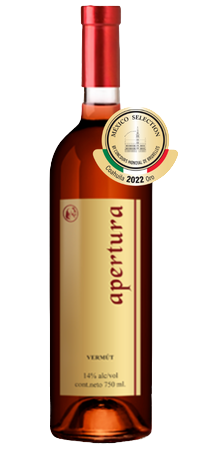

PEDIDOS
Pedido Mínimo de 3 botellas. A elegir de cualquiera de nuestras variedades

Apertura
$350
Vermút
Contenido Alcohólico: 14% Temperatura de servicio: 8 a 12°C
Descripción del Vino:
El Vermú o Vermut (del francés vermout, y éste del alemán wermut, (“ajenjo” o “absenta”) es un vino macerado en hierbas servido durante los aperitivos, compuesto de vino, ajenjo y otras sustancias amargas. De sabor fresco potente, complejo en nariz y boca por su carácter de notas amargas estimula el apetito. Ideal para días calurosos o cocteles, se recomienda servir en vaso corto con hielo y rodaja de naranja. Elaborado en recuerdo y memoria de nuestros padres de la “Generación Silenciosa” (1925-1942), y a quienes tanto debemos como guía y ejemplo de valores y amor al prójimo!
Camino a Viñedos Azteca No.12 Antes Camino Antiguo a Cadereyta
Km 40 + 0.4 Carretera San Juan del Río-Cadereyta Ezequiel Montes,
Querétaro CP.-76686
© 2020 Viñedos Azteca S.A. DE C.V.| Diseñado y desarrollado por grupo 6° cuatrimestre de Diseño Gráfico
Km 40 + 0.4 Carretera San Juan del Río-Cadereyta Ezequiel Montes,
Querétaro CP.-76686
© 2020 Viñedos Azteca S.A. DE C.V.| Diseñado y desarrollado por grupo 6° cuatrimestre de Diseño Gráfico